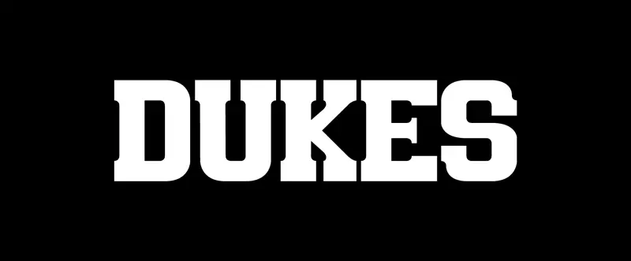

Dukes
Type Design

The Idea
The goal was to create a slab serif typeface suitable for the head and subhead of a movie poster. The movie I designed this typeface around is Rocky. This typeface should be applicable for any promotional purposes.


The Guidelines
I used the typeface in the original Rocky poster as inspiration. I also analyzed the headings on old and current boxing flyers. I wanted to apply a similar blocky appearance as these examples for the typeface characters. When assessing the flyers, I noticed a trend in the use of thick serifs. This gives the letters the appearance of having very sturdy footing like a boxer. I also found the blocky serifs give interesting shapes within the apertures between each pair of letters. This inspired me to create my own version of these serifs. Varsity is the font used on sports jerseys and applies these serifs. I used this font as inspiration for serif placement on the capital letters. I also found inspiration from Baskerville Serial Heavy’s use of contrasting strokes with the thinner horizontal strokes accentuating the thicker vertical strokes further giving off the appearance of sturdiness.

The Process
I sketched all the upper and lowercase letters, numbers, question mark, ampersand, and at sign on dot matrix paper. I took a very different approach to Varsity’s polygonal edges and used a lot of bezier curves to connect the serifs and to maintain some roundness in characters that typically have curved edges, such as the ‘O’, while maintaining a square, blocky appearance. These curves create a biological look like connected muscles, maintaining the theme of strength and sturdiness. I designed the capital letters to look very tall and monumental. I set the x-height to be 70% of the cap-height in order to make the capital letters tower over the lowercase letters by comparison. The lowercase letters have the appearance of being slightly more rounded due to their size, but still maintain a blocky, sturdy effect. The ascenders reach exactly cap-height to make lines of text look more militant and structured. The descenders are 25% of the cap-height, which maintains the blocky look without interfering with the line of text below.

The Typeface
I digitally illustrated all of my sketches in Adobe Illustrator. This gave me more control over the consistency of the bezier curves and stroke widths. I adjusted some of the apertures in certain characters such as the capital ‘H’ by making more space between the stems. This prevents the inner brackets from being too close and looking tight and closed off at a smaller font size. I also added more punctuation. I minimized the anchor points for each character and imported them all into Glyphs to make the typeface a fully functional OpenType font. During this process, I kerned, spaced, and character mapped to ensure the font has easy readability when typed. Because this typeface is thick, I chose to make the kerning tight to ensure the words aren’t too wide. This also makes the letters look more unionized and stronger in numbers, which contributes to the strength theme. I named the font “Dukes” to fit in with the theme of boxing.


The Poster
I modernized the original Rocky poster using Dukes for the title, tagline, and release time. I used Univers Ultra Condensed to fit in the credits. These fonts pair well with the extreme contrast of the heavy Dukes and the light Univers. I created a texture effect in Photoshop to make the title, which is the main character’s name, look like it was printed on the glove and worn down from use. It’s a gritty movie, so I wanted the poster to have a gritty atmosphere. The title, Rocky, is also the first thing the eye is drawn to because it’s in all caps and significantly larger than the rest of the text on the poster. I made the tagline only capitalized with the majority of the letters being lowercase to make it less hierarchal to the title to make up for it being on the top of the poster. This also helps to showcase the flow of the lowercase letters and readability of the typeface.

End Result
I’ve created a typeface that could be used in many different promotional contexts. It stands out among most other fonts, while remaining serious and structured. I learned that consistency is key when designing a typeface. Consistent strokes, curves, and serifs are what makes it readable and visually appealing. I also learned a lot about kerning, such as the difference between how a capital ‘A’ and a capital ’T’ should be spaced compared to two capital ‘H’s. Overall, designing this font gave me a whole new love for typography and was a great exercise in applying my typographic skills.
*Disclaimer: Rocky was created by Sylvester Stallone and is owned by Amazon MGM Studios. I am not affiliated with any of these entities. This is a concept project.